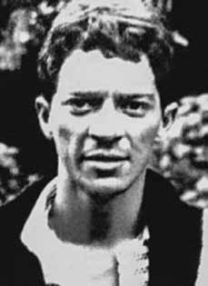

Antônio
Benetazzo
CIRCUNSTÂNCIAS DA MORTE
Antônio Benetazzo completaria 31 anos de idade quando foi morto por agentes do Estado brasileiro. A versão divulgada por comunicado dos órgãos de segurança, cinco dias após a morte, informava que ele teria sido detido e, depois de conduzir os policiais para um suposto “ponto” na rua João Boemer, no Brás, teria se jogado sob as rodas de um caminhão, cometendo suicídio.
Essa versão foi parcialmente reproduzida na edição do Diário da Noite, de 2 de novembro de 1972: “(…) os órgãos responsáveis pela segurança interna conseguiram localizar, no último sábado, um ‘aparelho terrorista’ pertencente ao Molipo (Movimento de Libertação Popular), prendendo o subversivo Antônio Benetazzo. Durante o interrogatório, Benetazzo indicou que teria um encontro com um companheiro de sua organização na segunda-feira seguinte, dia 30 às 15 horas, na rua João Boemer, no Brás. Na hora aprazada, compareceram ao local o terrorista preso e os agentes de segurança, oportunidade em que Benetazzo, conseguindo se desvencilhar das autoridades, tentou empreender fuga, atravessando, em desabalada carreira, a rua João Boemer, foi colhido pelas rodas de um caminhão marca Scania Vabis, que não conseguiu frear a tempo. Caiu mortalmente ferido, falecendo a caminho do pronto socorro. Ainda durante o interrogatório a que foi submetido, Benetazzo forneceu às autoridades o endereço de outro membro do Molipo. Perto das 20 horas da última segunda-feira, os agentes perceberam que dois homens entraram na casa tendo sido perseguidos pelas autoridades. Houve violenta troca de tiros e um dos terroristas caiu morto, mais tarde identificado como João Carlos Cavalcante Reis enquanto que o segundo, ferido na perna, conseguiu fugir (…)”.
Em documento do arquivo do antigo Departamento de Ordem Política e Social de São Paulo (DOPS/SP), marcado como “secreto”, é confirmada a versão de suicídio, assim como os relatórios dos ministérios da Marinha e da Aeronáutica encaminhados ao ministro da Justiça Maurício Corrêa, em 1993. Passados mais de 40 anos, as investigações sobre esse caso revelaram, entretanto, que a versão divulgada à época não se sustenta. Investigações dos familiares de Benetazzo confirmaram que não teria ocorrido nenhum acidente na região naquele dia.
De fato, conforme consta no requerimento de indenização da família à Comissão Especial sobre Mortos e Desaparecidos Políticos, sua prisão teria ocorrido no dia 28 de outubro de 1972, ao entrar na casa do operário e militante político Rubens Carlos Costa, na Vila Carrão, zona leste de São Paulo (SP), onde teria sido surpreendido com a presença de policiais que o levaram detido para a sede do Destacamento de Operações de Informações – Centro de Operações de Defesa Interna, DOI-CODI do II Exército, em São Paulo, onde permaneceu até ser morto sob tortura. Dois dias antes da sua morte se tornar conhecida publicamente, Benezatto já havia sido enterrado como indigente no Cemitério D. Bosco, em Perus.
O corpo de Benetazzo teria sido visto, ainda, no Instituto Médico-Legal de São Paulo (IML/SP) por familiares de outro militante político morto pela repressão, João Carlos Cavalcanti Reis, quando estiveram no local. Confirmando a versão dos órgãos da repressão, o laudo dos legistas Isaac Abramovitc e Orlando José Bastos Brandão relata a versão de morte por atropelamento no Exame Necroscópico. Em audiência sobre o caso, realizada pela Comissão da Verdade de estado de São Paulo Rubens Paiva (CEV-RP) em 12 de agosto de 2013, Renan Quinalha afirma que “legistas fizeram observações sobre o laudo de necropsia sobre Antônio Benetazzo na segunda metade da década de 1990”.
A análise concluiu que o exame necroscópico foi acusado de imprecisão, inclusive, de ausência de nomenclatura técnica adequada. Os médicos responsáveis por reanalisarem o exame apontaram que as lesões apresentadas no corpo não condiziam com a versão do atropelamento. Assim, ao avaliar fotos no arquivo do DOPS/SP, identificou-se que alguns ferimentos foram ignorados no laudo da época da morte, a exemplo de um ferimento à bala que teria provocado lesões no rosto, o qual sugeria que a morte não teria sido provocada por atropelamento e sim por esse ferimento, causado por arma de fogo, que teria sido disparada, quando se encontrava encostada ao crânio.
Durante a mesma audiência em homenagem a Antônio Benetazzo, Amélia Teles, que esteve detida com Rubens Carlos no DOPS/SP, em 1973, relatou que o corpo dele trazia marcas de graves queimaduras. Ao ser indagado sobre a causa, Rubens Carlos respondeu que, em um ato de desespero para salvar a vida do amigo, tinha tentado incendiar a casa em que estava para avisar o companheiro Benetazzo que um cerco policial o esperava no local. Infelizmente, o cerco do DOI-CODI contava com um efetivo dentro e fora da casa, o que resultou na prisão de Benetazzo. Na mesma audiência pública da CEV-RP, Alípio Freire, ex-militante da Ala Vermelha, fez questão de relembrar os graves impactos que a repressão política teve na vida familiar de todos os perseguidos.
No caso de Antônio Benetazzo, a prisão arbitrária e a morte sob torturas o impediram de conhecer sua filha, que ainda estava sendo gestada por sua companheira, Maria Aparecida Horta, em 1972. O corpo de Antônio Benetazzo teria sido enterrado como indigente, no Cemitério de Perus, no dia 31 de outubro de 1972, dois dias antes da divulgação da sua morte. Apesar de ter sido vítima de desaparecimento, posteriormente seus familiares conseguiram que seus restos mortais fossem trasladados.
Antônio Benetazzo would have turned 31 years old when he was killed by agents of the Brazilian State. The version released in a statement from security agencies, five days after the death, stated that he had been detained and, after leading the police to a supposed “spot” on Rua João Boemer, in Brás, he had thrown himself under the wheels of a truck, committing suicide.
This version was partially reproduced in the Diário da Noite edition of November 2, 1972: "(...) the bodies responsible for internal security managed to locate, last Saturday, a 'terrorist apparatus' belonging to Molipo (Popular Liberation Movement), arresting the subversive Antônio Benetazzo. During the interrogation, Benetazzo indicated that he would have a meeting with a companion from his organization the following Monday, the 30th at 3 pm, on Rua João Boemer, in Brás. At the appointed time, the arrested terrorist and security agents arrived at the scene, at which time Benetazzo, managing to free himself from the authorities, tried to escape, crossing João Boemer Street in an unsteady manner, and was caught by the wheels of a Scania Vabis truck, which was unable to stop in time. He fell, fatally injured, and died on the way to the emergency room. Benetazzo provided the authorities with the address of another member of Molipo. Around 8 pm last Monday, the agents noticed that two men entered the house after being chased by the authorities. There was a violent exchange of gunfire and one of the terrorists fell dead, later identified as João Carlos Cavalcante Reis, while the second, wounded in the leg, managed to escape (…)”.
In a document from the archive of the former Department of Political and Social Order of São Paulo (DOPS/SP), marked as “secret”, the suicide version is confirmed, as well as the reports from the Navy and Air Force ministries sent to the Minister of Justice Maurício Corrêa, in 1993. More than 40 years later, investigations into this case revealed, however, that the version released at the time is not sustainable. Investigations by Benetazzo's family confirmed that no accident had occurred in the region that day.
In fact, as stated in the family's request for compensation to the Special Commission on Political Deaths and Disappearances, his arrest took place on October 28, 1972, when he entered the home of worker and political activist Rubens Carlos Costa, in Vila Carrão, east zone of São Paulo (SP), where he was surprised by the presence of police officers who took him under arrest to the headquarters of the Information Operations Detachment – Internal Defense Operations Center, DOI-CODI of the II Army, in São Paulo, where he remained until he was killed under torture. Two days before his death became publicly known, Benezatto had already been buried as a pauper in Cemitério D. Bosco, in Perus.
Benetazzo's body would also have been seen at the São Paulo Medical-Legal Institute (IML/SP) by family members of another political activist killed by repression, João Carlos Cavalcanti Reis, when they were there. Confirming the version of the repression bodies, the report by coroners Isaac Abramovitc and Orlando José Bastos Brandão reports the version of death due to being run over in the Necroscopic Examination. In a hearing on the case, held by the Truth Commission of the state of São Paulo Rubens Paiva (CEV-RP) on August 12, 2013, Renan Quinalha states that “coronists made observations on the autopsy report on Antônio Benetazzo in the second half of the 1990s”.
The analysis concluded that the necroscopic examination was accused of inaccuracy, including the lack of adequate technical nomenclature. The doctors responsible for reanalyzing the examination pointed out that the injuries presented on the body did not match the version of the accident. Thus, when evaluating photos in the DOPS/SP archive, it was identified that some injuries were ignored in the report at the time of death, such as a gunshot wound that would have caused injuries to the face, which suggested that the death would not have been caused by being run over but rather by this injury, caused by a firearm, which would have been fired, when it was placed against the skull.
During the same hearing in honor of Antônio Benetazzo, Amélia Teles, who was detained with Rubens Carlos at the DOPS/SP, in 1973, reported that his body bore marks of severe burns. When asked about the cause, Rubens Carlos replied that, in an act of desperation to save his friend's life, he had tried to burn down the house he was in to warn his companion Benetazzo that a police siege was waiting for him there. Unfortunately, the DOI-CODI siege had personnel inside and outside the house, which resulted in Benetazzo's arrest. At the same CEV-RP public hearing, Alípio Freire, a former Red Wing activist, made a point of recalling the serious impacts that political repression had on the family lives of all those persecuted.
In the case of Antônio Benetazzo, arbitrary arrest and death under torture prevented him from meeting his daughter, who was still being carried by his partner, Maria Aparecida Horta, in 1972. Antônio Benetazzo's body would have been buried as a pauper, in the Perus Cemetery, on October 31, 1972, two days before his death was announced. Despite being a victim of disappearance, her family later managed to have her remains transferred.
Antônio Benetazzo habría cumplido 31 años cuando fue asesinado por agentes del Estado brasileño. La versión difundida en un comunicado de los organismos de seguridad, cinco días después de la muerte, afirmaba que había sido detenido y, después de conducir a la policía a un supuesto “lugar” de la Rua João Boemer, en Brás, se había arrojado bajo las ruedas de un camión, suicidándose.
Esta versión fue reproducida parcialmente en la edición del Diário da Noite del 2 de noviembre de 1972: "(...) los órganos responsables de la seguridad interior lograron localizar, el sábado pasado, un 'aparato terrorista' del Molipo (Movimiento Popular de Liberación), deteniendo al subversivo Antônio Benetazzo. Durante el interrogatorio, Benetazzo indicó que se reuniría con un compañero de su organización el lunes siguiente, 30, a las 15 horas, en la Rua João Boemer, en Brás, a la hora señalada, los terroristas y agentes de seguridad arrestados llegaron al lugar, momento en el que Benetazzo, logrando liberarse de las autoridades, intentó escapar, cruzando de manera inestable la calle João Boemer, y fue atrapado por las ruedas de un camión Scania Vabis, que no pudo detenerse a tiempo, cayó, resultó herido de muerte y falleció en el camino hacia el servicio de emergencia. El lunes, los agentes observaron que dos hombres ingresaron a la casa luego de ser perseguidos por las autoridades, hubo un violento intercambio de disparos y uno de los terroristas cayó muerto, posteriormente identificado como João Carlos Cavalcante Reis, mientras que el segundo, herido en una pierna, logró escapar (…)”.
En un documento del archivo del antiguo Departamento de Orden Político y Social de São Paulo (DOPS/SP), marcado como “secreto”, se confirma la versión del suicidio, así como los informes de los ministerios de la Marina y de la Fuerza Aérea enviados al ministro de Justicia, Maurício Corrêa, en 1993. Más de 40 años después, las investigaciones sobre este caso revelaron, sin embargo, que la versión difundida en ese momento no es sostenible. Las investigaciones de la familia Benetazzo confirmaron que ese día no se había producido ningún accidente en la región.
De hecho, como consta en el pedido de indemnización de la familia a la Comisión Especial de Muertes y Desapariciones Políticas, su detención ocurrió el 28 de octubre de 1972, cuando ingresó a la casa del trabajador y activista político Rubens Carlos Costa, en Vila Carrão, zona este de São Paulo (SP), donde fue sorprendido por la presencia de policías que lo llevaron detenido a la sede del Destacamento de Operaciones de Información – Centro de Operaciones de Defensa Interna, DOI-CODI del II Ejército, en São Paulo. Paulo, donde permaneció hasta que fue asesinado bajo tortura. Dos días antes de que se hiciera pública su muerte, Benezatto ya había sido enterrado como indigente en el Cemitério D. Bosco, en Perus.
El cuerpo de Benetazzo también habría sido visto en el Instituto Médico Legal de São Paulo (IML/SP) por familiares de otro activista político asesinado por la represión, João Carlos Cavalcanti Reis, cuando estaban allí. Confirmando la versión de los órganos de represión, el informe de los médicos forenses Isaac Abramovitc y Orlando José Bastos Brandão reporta la versión de muerte por atropello en el Examen Necroscópico. En una audiencia sobre el caso, celebrada por la Comisión de la Verdad del estado de São Paulo Rubens Paiva (CEV-RP) el 12 de agosto de 2013, Renan Quinalha afirma que “los forenses hicieron observaciones sobre el informe de la autopsia de Antônio Benetazzo en la segunda mitad de los años 1990”.
El análisis concluyó que el examen necroscópico fue acusado de inexactitud, incluida la falta de nomenclatura técnica adecuada. Los médicos encargados de volver a analizar el examen señalaron que las lesiones presentadas en el cuerpo no coincidían con la versión del accidente. Así, al evaluar fotografías en el archivo del DOPS/SP, se identificó que algunas lesiones fueron ignoradas en el informe en el momento de la muerte, como una herida de bala que habría causado lesiones en el rostro, lo que sugiere que la muerte no habría sido causada por un atropello sino por esta lesión, causada por un arma de fuego, que habría sido disparada, cuando fue colocada contra el cráneo.
Durante la misma audiencia en honor a Antônio Benetazzo, Amélia Teles, detenida con Rubens Carlos en el DOPS/SP, en 1973, informó que su cuerpo presentaba marcas de graves quemaduras. Preguntado por la causa, Rubens Carlos respondió que, en un acto de desesperación por salvar la vida de su amigo, había intentado quemar la casa en la que se encontraba para avisar a su compañero Benetazzo que allí le esperaba un cerco policial. Lamentablemente, el asedio del DOI-CODI tuvo personal dentro y fuera de la casa, lo que derivó en la detención de Benetazzo. En la misma audiencia pública del CEV-RP, Alípio Freire, ex activista de Red Wing, recordó los graves impactos que la represión política tuvo en la vida familiar de todos los perseguidos.
En el caso de Antônio Benetazzo, la detención arbitraria y la muerte bajo tortura le impidieron encontrar a su hija, que todavía estaba siendo llevada por su pareja, Maria Aparecida Horta, en 1972. El cuerpo de Antônio Benetazzo habría sido enterrado como indigente, en el Cementerio de Perus, el 31 de octubre de 1972, dos días antes de que se anunciara su muerte. A pesar de ser víctima de desaparición, su familia logró posteriormente que sus restos fueran trasladados.